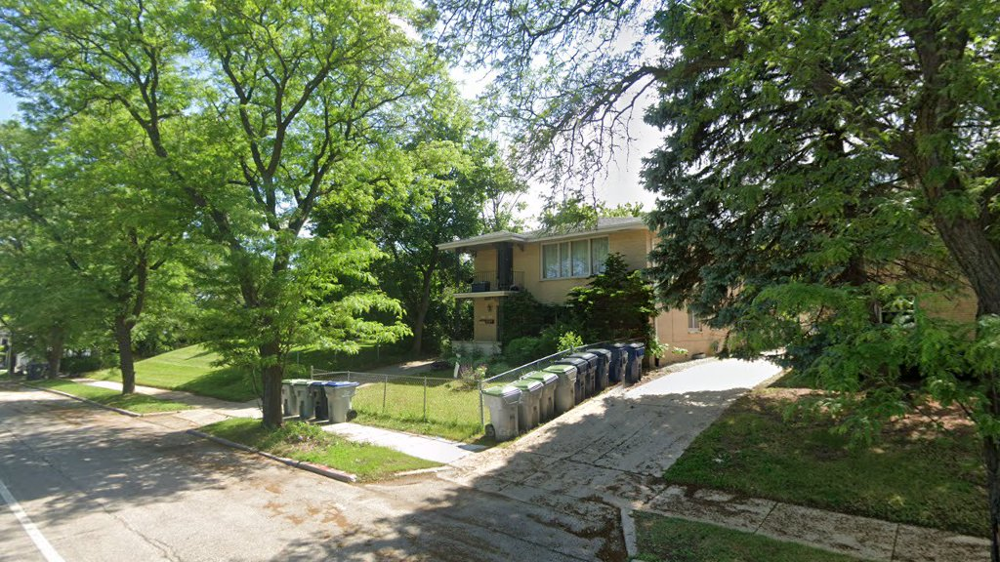
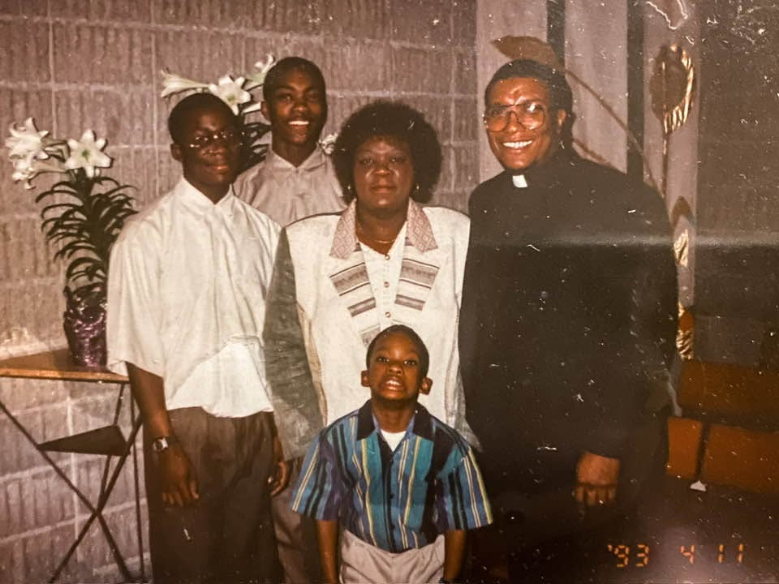
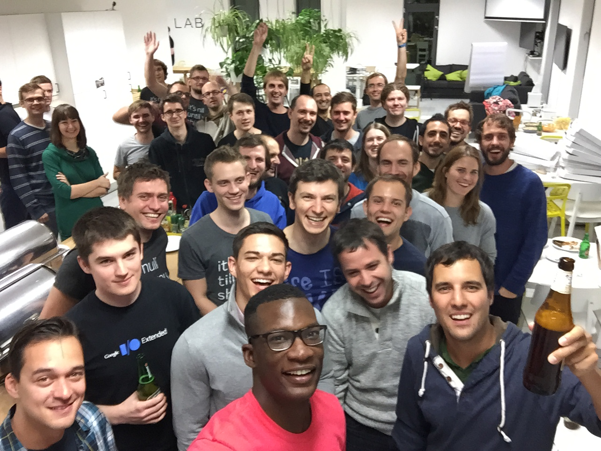
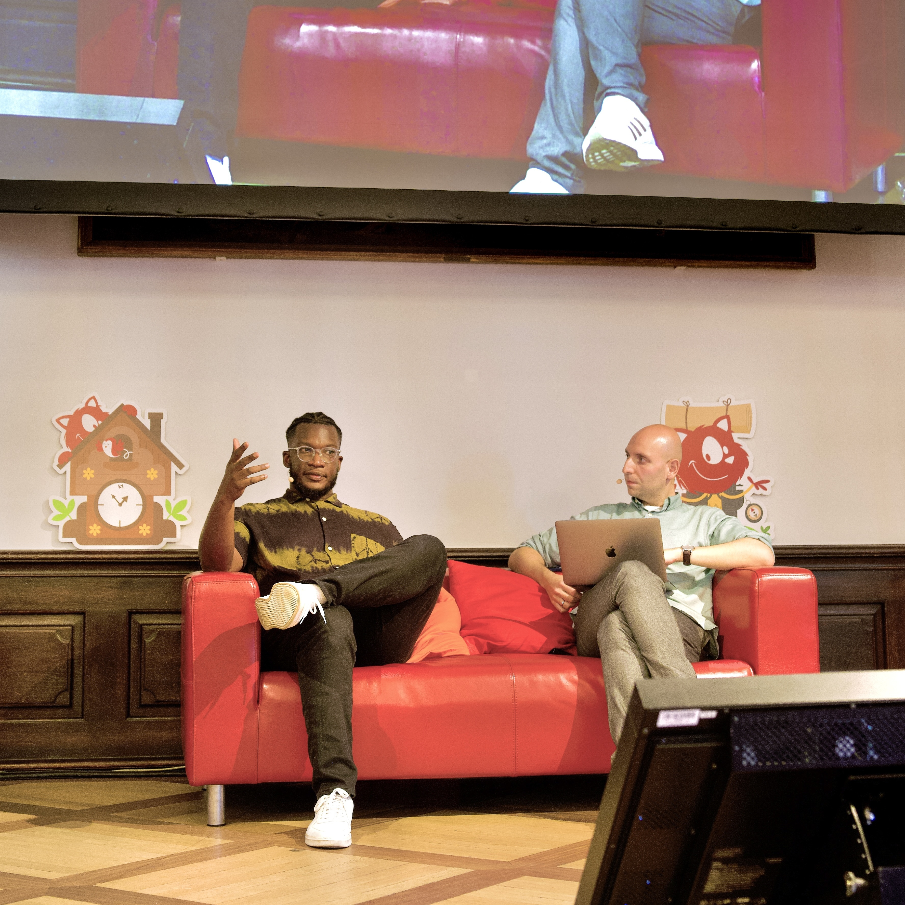

I design how organizations — and the people inside them — do their best work, building from curiosity and making quality a business strategy.
Designing experiences — and the organizations that ship them
A decade leading design at LinkedIn and Zendesk taught me that quality starts upstream — in how teams, systems, and strategy fit together. I design the organization, not just the interface.
Empowering the people I work with
The work I'm proudest of is the people. I lead by mentoring and coaching designers into leaders, building real relationships, and creating teams where everyone can do their best work.
Building from curiosity
Curiosity is the engine. Following it is how I've built LeadCraft, Facilitator, Dual Creator Cam, and the Technically Speaking podcast — and how it keeps opening new opportunities.
My story
Those threads — design, people, and curiosity — started long before my first design job. When I was 12, our family's home was burglarized and we lost nearly everything. What came next set my course: my father's organization donated an old computer, and I rebuilt it into my first window to the web. Community gave me a way in, and that access grew into a lifelong passion for technology — one I've spent my career paying forward.
1987
Milwaukee, Wisconsin
Born in the dead of a Milwaukee winter
I was born in 1987, in the middle of a brutal Milwaukee snowstorm — the kind of cold that becomes part of the family story. My mother spent her career in the public school system and my father was a pastor. Service and faith were the air in our house long before I had words for either.

1996
Milwaukee, Wisconsin
It started with what was taken away
Growing up in Milwaukee, Wisconsin, my family's home was burglarized while we were away at summer camp. It was devastating. But in the aftermath, my father's organization donated a computer to our household. It was an old, unbranded machine running Windows — essentially a blank canvas. I started spending Fridays at Barnes & Noble reading PC magazines, figuring out which parts I needed — a sound card, a graphics card, a 56K modem — until I had a machine that could run Microsoft Flight Simulator online and host my first website on Yahoo GeoCities.

1998
Milwaukee, Wisconsin
Webmaster — my first job in tech
A few summers later, I noticed that my mother's school didn't have a website. I offered to build one, and she advocated for a paid role. That was my first job in tech. I was the webmaster.
2005
Iowa City, Iowa
Art, discipline, and Division I football
I went on to study Art and Art History with a focus on Graphic Design at the University of Iowa, where I also played Division I football. The weight room at 5 AM taught me more about discipline, commitment, and pushing through discomfort than any design course — lessons I still carry into how I lead teams.
2011
Iowa City, Iowa
From the studio to pixels that ship
I moved from print and brand work into digital product design — the moment I realized the craft I loved could reach thousands of people at once and keep getting better long after it launched. That shift set the course for everything that followed.

2013
Chicago, Illinois
Base CRM — leading my first team
At Base CRM I stepped into management for the first time, leading UX design for a fast-moving sales platform. It's where I learned that great teams are built on clarity, trust, and a relentless focus on the customer's real job — not just the screen in front of you.
2017
San Francisco, California
LinkedIn — scaling a design org
At LinkedIn I grew the Marketing Solutions design team from 6 to 26 designers, shaped product strategy, and helped scale a product line from $500M to over $5B in revenue — all while shipping the tools advertisers around the world rely on every day.

2020
San Francisco, California
Building things of my own
I leaned into building. Facilitator, a FigJam tool now used by over a thousand facilitators. LeadCraft, a platform for design leaders navigating an era where everything — including how we work with AI — is changing. I don't just lead teams. I build things.
2025
On sabbatical, traveling the world
I'm taking a sabbatical to travel the world — following curiosity across Asia and beyond, writing and advising as I go, and meeting designers and builders wherever I land.
Scroll to follow the journey ↓
Tokyo · Kyoto · Busan · Seoul · Jeju · Shanghai · Chengdu · Chongqing · Hong Kong · Taipei · Kaohsiung · Hanoi · Da Nang · Bangkok · Ho Chi Minh City · Singapore · Bali · Sydney
Let's work together
I'm available for speaking engagements, leadership coaching, and advisory work with product and design teams.